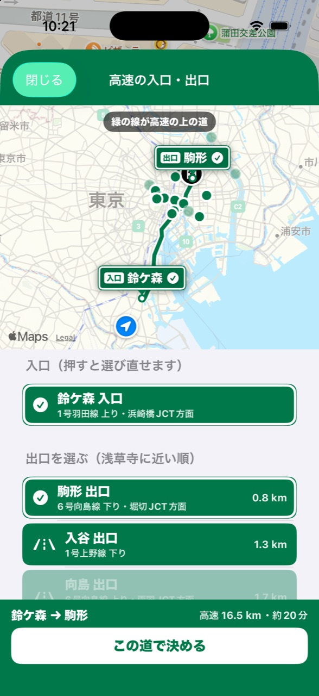
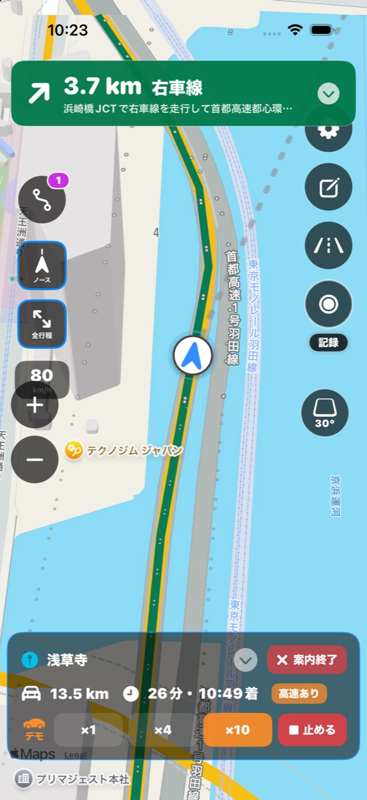

TAXI PRO NAVI でできること
TAXI PRO NAVI（タクシー・プロ・ナビ）は、タクシーの乗務員が毎日の仕事で使うためのナビです。Apple の地図の道順を土台に、お客様に言われた高速の入口・出口をそのまま選べるのがいちばんの特長です。
🛣️
高速の入口・出口を選べる全国の高速に対応。乗る入口、降りる出口を、地図の緑の札から選べます。🗣️
聞きやすい声の案内女性の声・男性の声から選べます。高速の分かれ道や車線も声でお知らせします。🚕
銀座乗禁地区のお知らせ規制の時間に近づく・入ると、画面に帯でお知らせします。音は鳴らしません。🔍
迷わない検索声でも文字でも。前に打った文字をすぐ呼び出して、直して検索できます。📒
道の手帳走った道を記録して、あとで再生。仲間に送ることもできます。▶️
デモ走行走らずに、道順と案内を机の上で確かめられます。
行き先を決めて［ゴー］
1
下の［検索］を押す住所・お店の名前を打つか、🎙️ を押して声で言います。地図のお店や場所をタップしても選べます。
2
候補から行き先を選ぶ道順の線が地図に出て、下に道順の窓が開きます。
3
［ゴー］で案内が始まる曲がり角の手前で、声と画面の帯でお知らせします。
前に打った文字
地番を一つ打ち間違えても、最初から打ち直す必要はありません。検索した文字は、入力欄の下に新しい順で 4 件出ます。押すと入力欄に入るので、間違えた所だけ直して検索してください。要らない物は行の ✕ で消せます。
道順の窓のボタン
- 高速なし 高速を使わない道順に引き直します。
- 道順 曲がる所の一覧を出します。高速の区間は緑、一般道は青の番号です。
- 経由地 途中で寄る所を検索して足します。ナビの途中でも足せます。
- 高速 乗る入口・降りる出口を選びます（次の章）。
高速の入口・出口を選ぶ
「羽田から乗って、駒形で降りて」——お客様のご希望どおりの道を、そのまま引けます。
1
道順の窓の［高速］を押す画面の上半分の地図に、入口が緑の札で立ちます。下には近い順の一覧が出ます。一覧には「上り・浜崎橋JCT方面」のように向きが付いています。
2
入口を選ぶ地図の札を押しても、一覧の行を押しても選べます。札を押すと、行き先に向かう側の向きが選ばれます。
3
出口を選ぶ行き先に近い順に、30 件まで並びます（その入口から行ける出口だけ）。出口を押すと、高速の上の道が緑の線で地図に出ます。
4
［この道で決める］入口までと出口から先は、Apple の地図の道順でつなぎます。

［高速］の選ぶ画面。蒲田から浅草寺へ、鈴ケ森から乗って駒形で降りる道。地図の緑の線が高速の上の道です。
取り返しのつかない間違いを防ぐ仕組み
- 逆向きの入口を選ぶと、必ず念押しします（「生麦方向」を選んでしまった、を防ぎます）。
- 大きな遠回りになる入口・出口は、札も行も薄く出して「遠回り（約 +34 km）」と添えます。
- 廃止・閉鎖が決まっている出入口には、一覧に知らせを添えます。閉じた後は候補から外します。
選びをやめるときは［選びを外す（Apple の道順に任せる）］を押します。
ナビ中

1号羽田線の上。道順の線も上の帯も、高速の区間は緑になります。
- 高速は緑、一般道は青。地図の線も、画面の上の帯も、高速の区間は緑の地に白い字になります。
例：浜崎橋JCTで右車線を走行して首都高速都心環状線へ
- 声は「およそ 300 メートル先」「まもなく」の二回。本線から側道へ寄る所も「左車線です」とお知らせします。
- ルートを外れたら、自動でリルートします。帯をタップすれば、すぐに引き直します。
- 走りながら地図を眺められます。指で地図をずらしても自車へ引き戻されません。指を離して 8 秒で、自車の位置へ戻ります。
- 経由地は、ナビの途中でも足せます。道順の窓の［経由地］から検索します。
案内の声（女性｜男性）
⚙️設定 →「ナビの音声案内」で、女性の声・男性の声を選べます。［聞く］で試しに鳴らせます。声は VOICEVOX Nemo を使っています。
声を作るのが間に合わない時だけ、iPhone の声（選んだ声と同じ男女）が代わりに読みます。iPhone に「Kyoko（拡張）」を入れておくと、代わりの声も自然になります。
入れ方：iPhone の設定 → アクセシビリティ → 読み上げコンテンツ → 声 → 日本語 → Kyoko → 拡張
銀座乗禁地区・空車通行止め
お客様を降ろして初めて「ここは乗禁地区だった」と気づく——それを防ぐためのお知らせです。
- 地図に薄い縞で出します。線は東京タクシーセンターの公式ポスター（2026年1月30日版）に合わせています。
- 規制の時間（土日祝を除く 22時〜翌1時）に近づく・入ると、検索欄の下に帯でお知らせします。音は鳴らしません。
- ナビ中は控えめに。実車で向かう時は、帯も縞も薄くして道順の邪魔をしません。
- 空車タクシー通行止め（群青・水色の囲い）。ナビで着いたら 15 分は空車として扱い、囲いの中にいたら画面の一番下に帯を出します。
- 地図に出すかどうかは、⚙️設定の「乗禁地区を地図に出す」で切り替えられます。
お知らせは目安です。実際の標識と交通規制に必ず従ってください。
道の手帳（記録・再生・送る）
1
右の［記録］を押して走る通った道が紫の線で残ります。ポケットに入れたままでも記録します。
2
止めて保存地名が自動で付いて、道の手帳に入ります。
3
左上の道の手帳から呼び出して ▶ 再生「一度お送りしたお客様の道」を、次に呼ばれた時に見返せます。
- 仲間に送る：道の手帳の道は、リンクやファイルで送れます。受け取った道は、そのまま道の手帳に入ります。
- 点にメモ：道の点を押すと「一方通行注意」「朝は混む」などのメモを残せます。
- 走行の足あと：記録を押していなくても、通った道に小さな白い点が残ります（100 m ごと・約 500 km 分）。⚙️設定の「走行の足あと」で止めたり消したりできます。
デモ走行
⚙️設定で「デモ走行」をオンにすると、道順の窓に［デモ］が出ます。押すと、道順の線の上を車が自分で走ります。案内の声・高速の緑・乗禁地区のお知らせを、走らずに確かめられます（一般道 時速 40 km・高速 時速 80 km を ×1／×4／×10 で早回し）。
デモの間は本物の GPS を使わず、道の手帳や足あとにも残しません。お客様をお乗せする前に、初めての高速の道を下見するのにも使えます。
注意点 — 安全がいちばん
🚗 運転中に画面を操作しないでください。
操作は必ず停車中に。案内の声と記録は、画面を見なくても働き続けます。
🛣️ 高速の地図データについて。
高速の入口・出口と高速の上の道は、OpenStreetMap のデータからアプリが作っています。新しい版を出すたびに作り直しますが、工事や通行止め・新しい出入口がすぐには反映されないことがあります。実際の標識を優先してください。
📡 GPS は万能ではありません。
高いビルの谷間・トンネル・高架の下では、位置や向きが一時的にずれることがあります。
🔋 充電しながらのご利用をおすすめします。
GPS を使い続けるため、電池の減りが早くなります。
よくある質問
会員登録は要りますか？記録した道はどこに保存されますか？
会員登録は要りません。道の手帳と足あとは、お使いの iPhone の中に保存されます。
知っている入口・出口が一覧に出てきません
地図データに名前が入っていない出入口や、地図データの抜けがあります。気づいた所を教えていただければ、次の版で直します。
案内の声が、時々ちがう声になります
声を作るのが間に合わない時に、iPhone の声が代わりに読んでいます。選んだ声と同じ男女の声を使います。「Kyoko（拡張）」を入れると自然になります（案内の声）。
記録中にアプリが落ちたら、道は消えますか？
いいえ。記録中はこまめに途中まで控えています。次に開いた時に「そこまでの道」を救い出して保存します。
地図が 3D のまま／2D のままになってしまった
右の 3D⇔2D の丸ボタンを押すと、傾きを好きな角度に変えられます。